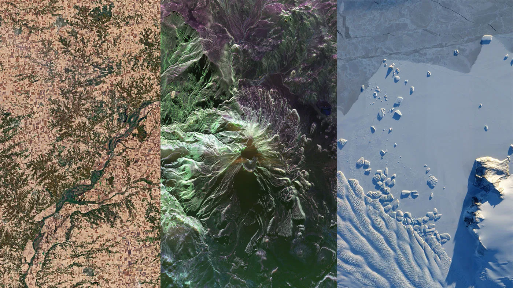

Sobre a Atmos
O que é a Atmos?
A Atmos é uma plataforma inteligente de monitoramento urbano que reúne dados de satélites, clima, mapas e informações geográficas para ajudar a identificar problemas nas cidades em tempo real. Ela foi criada para apoiar a prevenção de enchentes, ilhas de calor, áreas de risco, mudanças ambientais e outros desafios urbanos.
Para que a Atmos serve?
A Atmos serve para transformar dados complexos em informações visuais e fáceis de entender. Com ela, o usuário pode visualizar mapas, acompanhar regiões críticas, analisar riscos ambientais e entender melhor o que está acontecendo em uma cidade antes que o problema se torne maior.

Dados e Tecnologia
Quais dados a Atmos utiliza?
A Atmos utiliza diferentes tipos de dados, como:
- imagens e informações de satélites;
- dados climáticos;
- mapas urbanos;
- informações geográficas;
- dados sobre chuva, temperatura e áreas de risco.
Esses dados são organizados dentro da plataforma para gerar análises mais claras sobre o ambiente urbano.
A Atmos usa satélites de verdade?
Sim. A proposta da Atmos é utilizar dados espaciais como parte da análise urbana.
Entre as tecnologias consideradas está o uso de satélites SAR, que conseguem observar a superfície da Terra mesmo durante a noite ou com presença de nuvens, ajudando no monitoramento de áreas com risco de enchentes, deslizamentos ou alterações no solo.
O que torna a Atmos diferente de um site comum de previsão do tempo?
Um site de previsão do tempo normalmente mostra informações como chuva, temperatura e vento.
A Atmos vai além disso: ela cruza dados climáticos com mapas, satélites e inteligência geográfica para mostrar impactos reais na cidade, como pontos de alagamento, ilhas de calor, áreas vulneráveis e possíveis regiões de risco.
Uso da Plataforma
Quem pode usar a Atmos?
A Atmos pode ser usada por cidadãos, pesquisadores, estudantes, gestores públicos, equipes de defesa civil e empresas que precisam acompanhar problemas urbanos.
A ideia é que tanto usuários comuns quanto profissionais consigam entender os dados por meio de uma interface visual, moderna e simples.
Como o usuário acompanha os problemas da cidade?
O usuário acessa a plataforma e visualiza as informações em mapas interativos.
A partir deles, é possível identificar regiões com maior risco, acompanhar indicadores climáticos, verificar pontos críticos e entender como determinados problemas estão distribuídos pela cidade.
Alertas, Segurança e Impacto
A Atmos consegue alertar sobre riscos urbanos?
Sim. A proposta da Atmos é permitir que a plataforma indique áreas de atenção com base nos dados analisados.
Por exemplo, se uma região apresenta alto volume de chuva, histórico de enchentes ou alterações no solo, a plataforma pode destacar essa área como ponto de risco para facilitar a tomada de decisão.
Como a Atmos ajuda as cidades na prática?
A Atmos ajuda as cidades oferecendo uma visão mais clara dos problemas urbanos.
Com dados organizados em tempo real, gestores e usuários conseguem agir com mais rapidez, planejar melhor intervenções, acompanhar áreas vulneráveis e tomar decisões baseadas em informação, não apenas em percepção.
Nenhuma pergunta encontrada para essa busca.